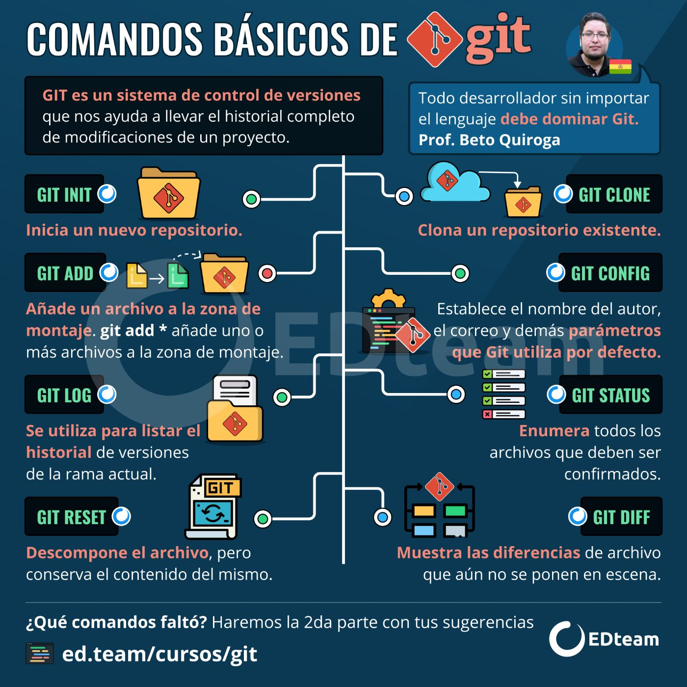

Los comandos básicos de Git son:
git init: Inicializa un nuevo repositorio.git clone [url]: Clona un repositorio existente.git add [archivo]: Agrega un archivo al área de preparación.git commit -m "mensaje": Realiza un commit con un mensaje.git status: Muestra el estado del repositorio.git push: Envía los cambios al repositorio remoto.git pull: Descarga y fusiona cambios del repositorio remoto.Estos comandos son esenciales para trabajar con Git y gestionar tus proyectos de manera efectiva.
⬅️ Volver al inicio Siguiente ➡️